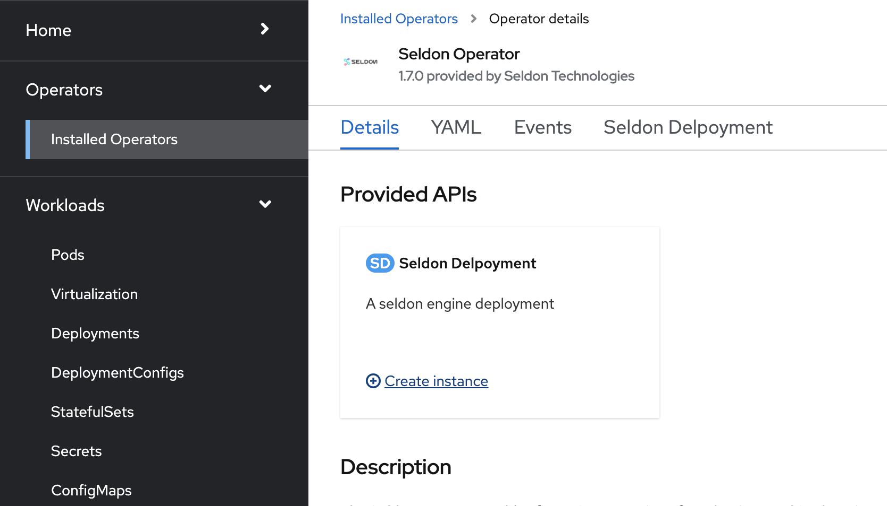

Deploy models on OpenShift using Seldon Server¶
Have a model trained and ready to share with the world? In this guide, we go over how to deploy models as a microservice using one of Seldon Core’s pre-packaged model servers.
Pre-requisites¶
An ML model trained using one of these supported ML libraries or a custom model (guide forthcoming) .
OpenShift namespace with seldon operator installed and administrator privileges available. (If you are using the Operate First cluster, you can use the namespace
ds-ml-workflows-wswhich already has Seldon deployed).
Steps to deploy¶
Save the model as a .joblib file and name it
model.joblib. Push the model to S3 in its own directory. For example a path likes3://<bucket_name>/<project_name>/<model_name>/model.joblib.On the OpenShift console:
Ensure the Seldon-Core operator is installed in the namespace where you are deploying.
If you are using the Operate First cluster, you can use the namespace
ds-ml-workflows-wswhich has Seldon deployed.To get access to this namespace, open an issue on the operate-first/support repository.
In the namespace, add create a secret with the AWS credentials for access to the bucket. To create a Secret, go to
Workloads,Secrets, click onCreateand selectFrom YAMLin the dropdown menu.

Here is an example of the format of the secret:
apiVersion: v1 kind: Secret metadata: name: seldon-init-container-secret type: Opaque data: AWS_ACCESS_KEY_ID: XXXX AWS_SECRET_ACCESS_KEY: XXXX AWS_ENDPOINT_URL: XXXX USE_SSL: XXXX
Find documentation on how to configure different object storage providers here.
First select an “Administrator” profile, then under Operators and Installed Operators you can add new Seldon Deployment in Seldon Core operator by clicking on
Create Instance.Select
YAML viewand enter your model deployment configuration. Here is an example deployment configuration which uses the Sklearn Server.Find more information on the formats of the deployment configs for other model servers here.

If you are using the SKLearn Seldon server, the
modelurirefers to the model’s prefix in the Ceph bucket. In your Seldon Deployment, change model URI to be for your model. Sample model URI from S3:s3://<bucket_name>/<project_name>/<model_name>/model.joblibIn your Seldon Deployment, add a reference to the secret with the AWS credentials for access to the bucket like
envSecretRefName: seldon-init-container-secret, where seldon-init-container-secret is the secret name.To test the deployed model endpoint, create a route to the deployed model by selecting the deployed service. To create a route, from the OpenShift console, go to
Networking, then go toRoutesand click on “Create Route”. Give the route a desired name, and select the service that we deployed earlier, select a “Target Port” and click on Create.

Once the route has been created, you can send a curl request to interact with the route like:
curl -X POST -H 'Content-Type: application/json' -d '{"data": { "ndarray": [[1,2,3,4]]}}' http://localhost:5000/api/v1.0/predictionsYou can also create a notebook such as this to interact with the model and ensure that the service is running as intended.